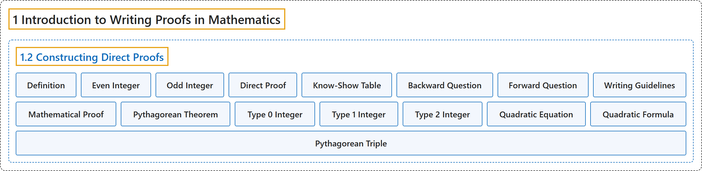

1.2 Constructing Direct Proofs
Classification

Glossary
| Term | Definition | 中文翻译 | Source |
|---|---|---|---|
| 1 Introduction to Writing Proofs in Mathematics 数学证明写作入门 |
(No definition) | （无定义） | Sundstrom, 2022, chapter 1 |
| 1.2 Constructing Direct Proofs 构造直接证明 |
(No definition) | （无定义） | Sundstrom, 2022, section 1.2 |
| Definition 定义 |
"A definition is an agreement that a particular word or phrase will stand for some object, property, or other concept that we expect to refer to often." | 定义是约定某个词或短语代表某个对象、性质或其他概念，这些是我们预计会经常提到的。 | Sundstrom, 2022, section 1.2 |
| Even Integer 偶数 |
"An integer \(a\) is an even integer provided that there exists an integer \(n\) such that \(a = 2n\text{.}\)" | 如果存在整数 \(n\) 使得 \(a = 2n\)，整数 \(a\) 就是偶数。 | Sundstrom, 2022, section 1.2 |
| Odd Integer 奇数 |
"An integer \(a\) is an odd integer provided there exists an integer \(n\) such that \(a = 2n + 1\text{.}\)" | 如果存在整数 \(n\) 使得 \(a = 2n + 1\)，整数 \(a\) 就是奇数。 | Sundstrom, 2022, section 1.2 |
| Direct Proof 直接证明 |
"A direct proof of a conditional statement is a demonstration that the conclusion of the conditional statement follows logically from the hypothesis of the conditional statement." | 条件陈述的直接证明是说明条件陈述的结论可以从假设逻辑地推出。 | Sundstrom, 2022, section 1.2 |
| Know-Show Table 已知-求证表 |
"This method will involve working forward from the hypothesis, \(P\text{,}\) and backward from the conclusion, \(Q\text{.}\) We will use a device called the know-show table to help organize our thoughts and the steps of the proof." | 这种方法包括从假设出发向前推（\(P\)）和从结论出发向后推（\(Q\)）。我们用一种叫已知-求证表的工具来帮助整理思路和证明步骤。 | Sundstrom, 2022, section 1.2 |
| Backward Question 逆向问题 |
"We usually start with the conclusion that we are trying to prove by asking a so-called backward question. The basic form of the question is, “Under what conditions can we conclude that \(Q\) is true?”" | 我们通常从要证明的结论出发，提出所谓的逆向问题。问题的基本形式是：“在什么条件下可以断定 \(Q\) 为真？” | Sundstrom, 2022, section 1.2 |
| Forward Question 正向问题 |
"To do this, we work forward from step \(P\text{,}\) and this involves asking a forward question. The basic form of this type of question is, “What can we conclude from the fact that \(P\) is true?”" | 为此，我们从步骤 \(P\) 向前推，这需要提出正向问题。这类问题的基本形式是：“从 \(P\) 为真这一事实能得出什么结论？” | Sundstrom, 2022, section 1.2 |
| Writing Guidelines 写作指南 |
"At the risk of oversimplification, doing mathematics can be considered to have two distinct stages. The first stage is to convince yourself that you have solved the problem or proved a conjecture." | 冒着过于简化的风险，可以认为做数学有两个不同阶段。第一阶段是让自己相信已经解决了问题或证明了猜想。 | Sundstrom, 2022, section 1.2 |
| Mathematical Proof 数学证明 |
"A mathematical proof is a convincing argument (within the accepted standards of the mathematical community) that a certain mathematical statement is necessarily true." | 数学证明是一个令人信服的论证（符合数学界公认的标准），说明某个数学陈述必然为真。 | Sundstrom, 2022, section 1.2 |
| Pythagorean Theorem 勾股定理 |
"The Pythagorean Theorem for right triangles states that if \(a\) and \(b\) are the lengths of the legs of a right triangle and \(c\) is the length of the hypotenuse, then \(a^2 + b^2 = c^2\)" | 直角三角形的勾股定理指出：如果 \(a\) 和 \(b\) 是直角三角形两条直角边的长，\(c\) 是斜边的长，那么 \(a^2 + b^2 = c^2\) | Sundstrom, 2022, section 1.2 |
| Type 0 Integer 0 型整数 |
"An integer \(a\) is said to be a type 0 integer if there exists an integer \(n\) such that \(a=3n\text{.}\)" | 如果存在整数 \(n\) 使得 \(a=3n\)，就说整数 \(a\) 是 0 型整数。 | Sundstrom, 2022, section 1.2 |
| Type 1 Integer 1 型整数 |
"An integer \(a\) is said to be a type 1 integer if there exists an integer \(n\) such that \(a=3n+1\text{.}\)" | 如果存在整数 \(n\) 使得 \(a=3n+1\)，就说整数 \(a\) 是 1 型整数。 | Sundstrom, 2022, section 1.2 |
| Type 2 Integer 2 型整数 |
"An integer \(a\) is said to be a type 2 integer if there exists an integer \(m\) such that \(a=3m+2\text{.}\)" | 如果存在整数 \(m\) 使得 \(a=3m+2\)，就说整数 \(a\) 是 2 型整数。 | Sundstrom, 2022, section 1.2 |
| Quadratic Equation 二次方程 |
"Let \(a\text{,}\) \(b\text{,}\) and \(c\) be real numbers with \(a \ne 0\text{.}\) The solutions of the quadratic equation \(ax^2 + bx + c = 0\) are given by the quadratic formula" | 设 \(a\)、\(b\) 和 \(c\) 是实数，\(a \ne 0\)。二次方程 \(ax^2 + bx + c = 0\) 的解由求根公式给出 | Sundstrom, 2022, section 1.2 |
| Quadratic Formula 二次方程求根公式 |
"The solutions of the quadratic equation \(ax^2 + bx + c = 0\) are given by the quadratic formula, which states that the solutions are \(x_1\) and \(x_2\text{,}\) where \(x_1 = \frac{-b + \sqrt{b^2 - 4ac}}{2a} \text{ and } x_2 = \frac{-b - \sqrt{b^2 - 4ac}}{2a}\text{.}\)" | 二次方程 \(ax^2 + bx + c = 0\) 的解由求根公式给出，该公式指出方程的解为 \(x_1\) 和 \(x_2\)，其中 \(x_1 = \frac{-b + \sqrt{b^2 - 4ac}}{2a} \text{ and } x_2 = \frac{-b - \sqrt{b^2 - 4ac}}{2a}\)。 | Sundstrom, 2022, section 1.2 |
| Pythagorean Triple 勾股数组 |
"Three natural numbers \(a\text{,}\) \(b\text{,}\) and \(c\) with \(a \lt b \lt c\) are said to form a Pythagorean triple provided that \(a^2 + b^2 = c^2\text{.}\)" | 三个自然数 \(a\)、\(b\) 和 \(c\)（\(a \lt b \lt c\)），如果满足 \(a^2 + b^2 = c^2\)，就说它们构成勾股数组。 | Sundstrom, 2022, section 1.2 |
References
Sundstrom, T. (2022). Mathematical reasoning: Writing and proof (Version 2.1; PreTeXt edition by Grand Valley State University). Retrieved October 30, 2026, from https://gvsuoer.github.io/sundstrom-textbook/frontmatter.html